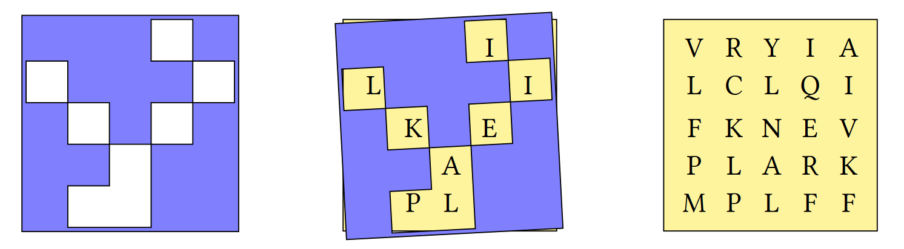

Array Logic and Data-driven Conditionals
Logic and conditions
BQN has logical and comparison functions as in-built primitives. Much like the arithmetic, these symbols are like those used in conventional notation.
Some of these are more general mathematical functions which happen to be the same as logical functions when used with Booleans (1s and 0s). Unlike APL, in BQN the ∧ and ∨ primitives do not provide LCM and GCD respectively (see Why not GCD and LCM? for details).
0‿1‿0‿1 ∧ 0‿0‿1‿1 # Logical AND⟨ 0 0 0 1 ⟩ 0‿1‿0‿1 ∨ 0‿0‿1‿1 # Logical OR⟨ 0 1 1 1 ⟩ 'P' ≠'Q' # Not equal to1 0‿1‿0‿1 ≠0‿0‿1‿1 # Logical XOR ⟨ 0 1 1 0 ⟩Logic Functions
The 16 possible logic functions for two binary variables can all be expressed succinctly in BQN. The following explanation and table have been adapted from an APL version found in this notebook.
The binary column here represets the output of the logic gate for all combinations of two 1-bit inputs — also known as the truth table. For example, the truth table for an OR gate:
0‿0‿1‿1 ∨ 0‿1‿0‿1⟨ 0 1 1 1 ⟩
+´(⌽2⋆↕4)⊸× 0‿1‿1‿17
| Binary | Decimal +´(⌽2⋆↕4)⊸× |
Function 𔽠|
Description |
|---|---|---|---|
0 0 0 0 |
0 |
0˙ |
FALSE |
0 0 0 1 |
1 |
∧ |
AND |
0 0 1 0 |
2 |
> |
Left but not right |
0 0 1 1 |
3 |
⊣ |
Left |
0 1 0 0 |
4 |
< |
Right but not left |
0 1 0 1 |
5 |
⊢ |
Right |
0 1 1 0 |
6 |
≠|
Exclusive OR |
0 1 1 1 |
7 |
∨ |
OR |
1 0 0 0 |
8 |
¬∨ |
NOR |
1 0 0 1 |
9 |
= |
Exclusive NOR |
1 0 1 0 |
10 |
¬⊢ |
Not right |
1 0 1 1 |
11 |
≥ |
Left OR Not right |
1 1 0 0 |
12 |
¬⊣ |
Not left |
1 1 0 1 |
13 |
≤ |
Right OR Not left |
1 1 1 0 |
14 |
¬∧ |
NAND |
1 1 1 1 |
15 |
1˙ |
TRUE |
The shape of data
One of the distinguishing features of BQN is the multidimensional array. Single elements, lists and tables are quite familiar constructs.
Tables are very useful for representing data which is related in some way. For example, let's say that the price of oranges changes daily. We can represent a week of prices as a 7-element numeric list.
0.35‿0.3‿0.33‿0.32‿0.39‿0.33‿0.36How about the amount spent on 3 items? We could store this in 3 separate lists, but it is convenient to keep it in a table with 3 rows and 7 columns.
The reshape function 𝕨⥊𝕩 takes data from 𝕩 and uses it to fill out an array of shape 𝕨, one row at a time.
cost ↠3‿7⥊4.36‿4.22‿4.05‿4.14‿4.18‿4.19‿4.02‿2.79‿2.58‿2.68‿2.77‿2.88‿2.79‿2.52‿3.07‿3‿3.13‿3‿3.24‿3.06‿3.29┌─
╵ 4.36 4.22 4.05 4.14 4.18 4.19 4.02
2.79 2.58 2.68 2.77 2.88 2.79 2.52
3.07 3 3.13 3 3.24 3.06 3.29
┘So what is this table that we have created? In other languages, there are lists, and there are lists of lists. In BQN, a list of lists is not the same thing as a table (also known as a matrix). BQN arrays contain two essential pieces of information: their shape and their list of elements.
The shape function ≢𕩠returns the shape of its argument.
≢4‿12‿31
3The following table lists the rank (number of dimensions), some common names, and a geometric analogy for the three simplest types of multidimensional arrays.
| Rank | Name | Geometric analogy | diagram |
|---|---|---|---|
| \(0\) | scalar | point |  |
| \(1\) | vector or list | line | |
| \(2\) | matrix or table | rectangle |
Arrays with \(3\) or more dimensions are sometimes called cube or cuboid, but they are generally referred to as N-dimensional arrays, rank-N arrays or high rank arrays. Arrays of rank greater than \(3\) are sometimes called noble arrays.
For our cost matrix, the total spent on each item is a row-wise sum, or put a different way, the sum of each major cell:
+´˘cost # The total cost over the week⟨ 29.16 19.009999999999998 21.79 ⟩ ≢+´˘cost # For 3 items. Shape is always an array.⟨ 3 ⟩The total for each day across all items is a column-wise sum:
+˝cost # The total cost of 3 items⟨ 10.219999999999999 9.8 9.86 9.91 10.3 10.04 9.83 ⟩ ≢+˝cost # Over 7 days⟨ 7 ⟩Shape and Deshape
When called monadically, the ⥊ primitive is called deshape. It removes shape information from the array and lays out all the elements in a vector in index order.
abc ↠'A' + ↕26
3‿3⥊abc┌─
╵"ABC
DEF
GHI"
┘ ⥊3‿3⥊abcABCDEFGHIThe table modifier
The table modifier ⌜ applies its function operand 𔽠between all combinations of elements of its left and right argument arrays. Quoting BQN's documentation, table is "like a structure-preserving and function-applying Cartesian product," and is similar to APL's outer product.
F ↠{𝕨+𝕩}
1‿2‿3 F⌜ 10‿20‿30┌─
╵ 11 21 31
12 22 32
13 23 33
┘For example, the join function ∾ will join two lists together. We can use the table modifier to join combinations of words from two lists.
1 4 9 , 6 5 41 4 9 6 5 4 "joined up" ∾ "text vectors""joined uptext vectors"
 "chicken"‿"pork"‿"vegetable" ∾⌜ " chow mein"‿" with cashew nuts"┌─
╵ "chicken chow mein" "chicken with cashew nuts"
"pork chow mein" "pork with cashew nuts"
"vegetable chow mein" "vegetable with cashew nuts"
┘What are those boxes around the output?
In BQN, any value can be used an array element, including others arrays. The next section on multidimensional and nested arrays introduces them in more detail.
Replicate/Compress
The replicate function 𝕨/𝕩 repeats each major cell in 𝕩 the corresponding number of times specified in 𝕨.
1‿2‿3/"ABC""ABBCCC" a ↠2‿3⥊"APLBQN"┌─
╵"APL
BQN"
┘ 1‿2/a┌─
╵"APL
BQN
BQN"
┘??? Why is this different than APL? BQN's replicate behaves differently than APL's. BQN's replicate repeats each major cell.
To replicate (go ahead, roll your eyes) APL's behavior in BQN, we have to modify the replicate function to be applied to each major cell:
```BQN
b /⎉1 a # Specifying rank of 1
b⊸/˘a # Using the cells modifier
```
```
┌─
╵"APPLLL
BQQNNN"
┘
```
We'll cover the rank and cells primitives in later lessons.
When used with a Boolean array, the replicate function acts like filter.
0‿1‿0‿0‿1‿0/"APLBQN"Y
OIndexing
In many other programming languages, "selection" is used to describe control structures such as "if then else" or "switch case". In BQN, we can get a similar effect by literally "selecting" elements from arrays.
The two means of selection here are the select function ⊠and the filtering usage of replicate which we saw earlier.
Info
Indexing starts from 0 by default, unlike APL which starts from 1 by default.
0‿7‿10⊏"BOILED QUINOA"BQN / 1‿0‿0‿1‿0‿1⟨ 0 3 5 ⟩ IsDivisibleBy ↠{0=𝕩|𝕨}
3‿6‿8‿5‿2 IsDivisibleBy 2⟨ 0 1 1 0 1 ⟩ 3‿6‿8‿5‿2 {(𕨠IsDivisibleBy 𝕩)/𝕨} 2⟨ 6 8 2 ⟩Problem set 3
-
Define the numeric vector
numsnums ↠3‿5‿8‿2‿1- Using
nums, definemat
mat┌─ ╵ 3 5 8 2 1 3 ┘- Using
mat, definestack
stack┌─ ╵ 3 5 8 2 1 3 3 5 8 2 1 3 ┘- Using
mat, definewide
wide┌─ ╵ 3 5 8 3 5 8 2 1 3 2 1 3 ┘Answers
-
mat ↠2‿3⥊nums -
stack ↠2/mat -
wide ↠mat(∾â‰1)mat
- Using
-
Why does
101="101"evaluate to a 3-element list?Answer
101is a literal single number (a scalar), whereas"101"is a literal 3-element character vector.Due to singleton extension,
101="101"compares the single number101to each of the 3 characters in the 3-element character vector"101". The character vector"101"is equivalent to'1'‿'0'‿'1'but the number101is not the same as the 3-element numeric vector1‿0‿1. -
Write a function
PassFailwhich takes an array of scores and returns an array of the same shape in whichFcorresponds to a score less than 40 andPcorresponds to a score of 40 or more.PassFail 35‿40‿45"FPP"
PassFail 2‿5⥊89‿77‿15‿49‿72‿54‿25‿18‿57‿53┌─ ╵"PPFPP PFFPP" ┘Answer
PassFail ↠{(ğ•©â‰¥40)⊏"FP"} -
This problem is taken from the 2019 APL Problem Solving Competition.
A Grille is a square sheet with holes cut out of it which, when laid on top of a similarly-sized character matrix, reveals a hidden message.

Write a BQN function
DecodeGrillewhich:- takes a character matrix left argument where a hash
'#'represents opaque material and a space' 'represents a hole. - takes a character matrix of the same shape as right argument
- returns the hidden message as a character vector
(2‿2⥊"# # ") DecodeGrille 2‿2⥊"LHOI""HI"
grid ↠5‿5⥊"VRYIALCLQIFKNEVPLBRKMQNFF" grille ↠5‿5⥊"⌺⌺⌺ ⌺ ⌺⌺⌺ ⌺ ⌺ ⌺⌺⌺ ⌺⌺⌺ ⌺⌺" grid ⋈ grille┌─ · ┌─ ┌─ ╵"VRYIA ╵"⌺⌺⌺ ⌺ LCLQI ⌺⌺⌺ FKNEV ⌺ ⌺ ⌺ PLBRK ⌺⌺ ⌺⌺ MQNFF" ⌺ ⌺⌺" ┘ ┘ ┘
grille DecodeGrille grid"ILIKEBQN"Answer
We can take an approach that uses Select
𝕨⊏𝕩or an approach that uses Group𝕨⊔𝕩.The Select function
⊏supports its left argument being a boolean mask, but requires that mask to be a rank-1 array. This means we have to deshape both of our arrays before selecting:DecodeGrille ↠{(' '=⥊ğ•¨)/⥊ğ•©}Here are two ways to read the above in English:
"Replicate items in the deshaped right argument according to the indices of space characters in the left argument."
"Keep items from the flattened right argument at the same indices where the flattened left argument has space characters."
Alternatively, we can create a boolean mask of the same shape as the original grille and use that as the left argument to Group
⊔. The Group function will then bucket items from its right argument (our grid) according to whether the left argument has a0or a1at that same spot.Grille ↠{1⊑(grille=' ')⊔grid}Group returns an array of its groupings. We therefore have to grab the one-th item, because "indices that match a space" will have a value of
1in the left argument, and thus values from the right argument at those spots will be grouped under index1.In English: "Take the one-th value from the grouping of items in the right argument at indices where the left argument has space characters."
- takes a character matrix left argument where a hash
-
Back to School
-
Write a function to produce the multiplication table from
1to𝕩.MulTable 7┌─
╵ 1 2 3 4 5 6 7
2 4 6 8 10 12 14
3 6 9 12 15 18 21
4 8 12 16 20 24 28
5 10 15 20 25 30 35
6 12 18 24 30 36 42
7 14 21 28 35 42 49
┘ -
Write a function to produce the addition table from
0to𝕩.AddTable 6┌─
╵ 0 1 2 3 4 5
1 2 3 4 5 6
2 3 4 5 6 7
3 4 5 6 7 8
4 5 6 7 8 9
5 6 7 8 9 10
┘
Answers
-
MulTable ↠{(1+↕ğ•©)×⌜1+↕ğ•©}Avoid repeating yourself by assigning values to a name (
numsin this example):MulTable ↠{numsâ†1+↕𕩠⋄ nums×⌜nums}Or, if left and right arguments to a dyadic function are the same, use the modifier Self
F˜𝕩which takes one argument𝕩and passes it as both the left and right arguments to the functionFit modifies:MulTable ↠{×⌜˜1+↕ğ•©} -
Using the same three styles as described in part (a) above:
AddTable ↠{(↕ğ•©)+⌜↕ğ•©} AddTable ↠{numsâ†â†•ğ•© â‹„ nums+⌜nums} AddTable ↠{+⌜˜↕ğ•©}
-
-
Making the Grade
Score Range 0-6465-6970-7980-8990-100Letter Grade F D C B A Write a function that, given an array of integer test scores in the inclusive range 0 to 100, returns a list of letter grades according to the table above.
Grade 0‿10‿75‿78‿85"FFCCB"Answer
Use the table modifier to compare all combinations of the lower bounds and the scores. The column-wise sum then tells us which "bin" each score belongs to:
Grade ↠{(1-Ëœ+˝0‿65‿70‿80‿90≤⌜ğ•©)⊏"FDCBA"}Remembering that comparisons like
≤return either0or1, this can be read in English as: Select the characters from"FDCBA"at the indices calculated by subtracting 1 from the column-wise sums of the comparison of the lowest-acceptable scores for each letter grade to the actual score.In the above solution, we've used the swap modifier
Ëœwith-to avoid parentheses. We can get rid of all parenthese with one more:Grade ↠{"FDCBA"âŠËœ1-Ëœ+˝0‿65‿70‿80‿90≤⌜ğ•©} -
Analysing text
-
Write a function test if there are any vowels
'aeiou'in text vector⍵AnyVowels "this text is made of characters" 1 AnyVowels "bgxkz" 0 -
Write a function to count the number of vowels in its character vector argument
⍵CountVowels "this text is made of characters"9
CountVowels "we have twelve vowels in this sentence"12 -
Write a function to remove the vowels from its argument
RemoveVowels "this text is made of characters" "ths txt s md f chrctrs"
Answers
TODO Consider whether this tabling is helpful, or just use membership.
-
With two or-reductions, we ask "are there any
1s in each row?" Then, "are there any1s in any of the rows?"AnyVowels ↠{∨/∨/'aeiou'∘.=⍵}Or we can ravel the contents of the array into a vector to perform one big or-reduction across all elements:
AnyVowels ↠{∨/,'aeiou'∘.=⍵} -
Similar techniques can be used for counting the ones:
CountVowels ↠{+/+/'aeiou'∘.=⍵} CountVowels ↠{+/,'aeiou'∘.=⍵}Because we are comparing a single vector, +⌿ and ∨⌿ both tell us if there is any vowel in that position:
CountVowels ↠{+/+⌿'aeiou'∘.=⍵} CountVowels ↠{+/∨⌿'aeiou'∘.=⍵} -
To remove vowels, we must consider the columns of our outer product equality. We then keep elements which are not
~⍵vowels.RemoveVowels ↠{⍵/â¨~∨⌿'aeiou'∘.=⍵}Or rows if the arguments to our outer product are swapped:
RemoveVowels ↠{⍵/â¨~∨/'aeiou'∘.=⍵}Since we are compressing elements out of a vector, we can use either replicate
⍺/⍵or replicate-first⍺⌿⍵. This is because a vector only has a single dimension, or axis, and that axis is both the first and the last.RemoveVowels ↠{⍵/â¨âˆ¨âŒ¿'aeiou'∘.=⍵} RemoveVowels ↠{âµâŒ¿â¨âˆ¨âŒ¿'aeiou'∘.=⍵}
-
-
Matching shapes
-
Write a function to add a vector
⍵to each row of a matrix⍺:(3 2⍴1 100) AddRows 1 9 2 109 2 109 2 109 (5 3⍴1 10 100 1000) AddRows 5 10 15 6 20 115 1005 11 25 105 1010 16 15 110 1015 6 20 115 -
Write a function to add a vector to each row of a matrix, regardless of the order in which they are supplied:
1 9 AddRows 3 2⍴1 100 2 109 2 109 2 109 (2 2⍴1 9 11 18) AddRows 9 1 10 10 20 19
Answers
-
Reshape recycles elements. We can use this to duplicate rows until we have the correct shape to allow
+to map between elements for us:AddRows ↠{⍵+(â´âµ)â´âº} -
Finding the maximum shape is a more general solution:
AddRows ↠{sâ†(â´âº)⌈â´âµ â‹„ (sâ´âº)+sâ´âµ}This way of applying functions between arrays of different shapes is very common. As with many things in this course, eventually we will discover more elegant methods. Here is an example of using the rank operator:
AddRows ↠+â¤1
-
-
These are the heights of some students in 3 classes.
student ↠10 7⍴'Kane Jonah JessicaPadma Katie CharlieAmil David Zara Filipa ' class ↠'CBACCCBBAB' height ↠167 177 171 176 178 164 177 177 173 160Use APL to:
- Find the height of the tallest student
- Find the name of the tallest student
- Find the class to which the tallest student belongs
- Find the average height of students in class
B
Answers
-
⌈/height 178 -
(height=⌈/height)⌿student Katie -
(height=⌈/height)⌿class CYou might have tried to use indexing and gotten an error:
RANK ERROR student[⍸height=⌈/height] ∧There is additional syntax in order to select from matrices and higher rank arrays.
-
We can use either compress or indexing to select from the
heightvector:Mean ↠{(+/⍵)÷≢âµ} Mean (class='B')/height 172.75 Mean height[⍸class='B'] 172.75
-
Optimus Prime
A prime number is a positive whole number greater than \(1\) which can be divided only by itself and \(1\) with no remainder.
Write a dfn which returns all of the prime numbers between
1and⍵.Primes 102 3 5 7
Primes 302 3 5 7 11 13 17 19 23 29Answer
Primes ↠{⍸2=+⌿0=∘.|â¨â³âµ}An alternative coding uses the multiplication table:
Primes ↠{i~∘.×â¨iâ†1↓â³âµ}Of course, the outer product
∘.Findicates that the number of calculations to compute both of these solutions increases with the square of the input size. We say they have a computational complexity "of order n squared" or \(O(n^2)\) in big-O notation. This is a very inefficient way to find prime numbers. To see discussions around more efficient ways to compute prime numbers in APL, see the dfns page on prime numbers.